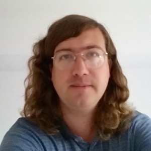
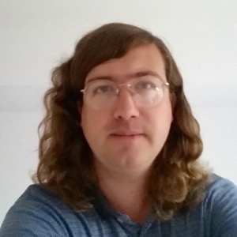

2015.06.17

2016.06.14


2016.05.20

2016.05.13


2016.05.06


2016.04.19

2016.04.17


2016.04.13

Best Student Paper Award at HSCC 2016
2015.12.20
2015.12.18

2015.11.01
Please consider applying or encourage your students and postdocs to apply for a tenure-track position in the Department of Computer Science (CS) and Department of Electrical, Computer, and Energy Engineering (ECEE) at the University of Colorado Boulder. We have multiple openings with one particular interest area in Computer Science being secure and reliable software systems. Applications will be evaluated beginning on November 9, 2015 with priority given to applications received by December 7, 2015, although applications will continue to be evaluated until the position is filled. Apply at http://www.jobsatcu.com/postings/109940 for CS and at https://www.jobsatcu.com/postings/107808 for ECEE.
Tenure-Track Position
The Department of Computer Science (CS) at the University of Colorado Boulder seeks applications for multiple tenure-track positions. The openings are targeted at the level of Assistant Professor, but experienced candidates may be considered for Associate or Full Professor. Research areas of particular interest include, but are not limited to, the areas of secure and reliable software systems (with an emphasis in software engineering and/or security), network science, scientific data analysis and visualization, computer systems as applied to autonomous and networked devices, and theoretical computer science. Our department values inclusive excellence and we seek candidates that understand the benefits that diversity brings to scientific innovation and who, through their work, develop technologies that impact a wide range of communities. Our department is also responsive to dual career situations.
Our vision of successful candidates are those who demonstrate the potential for excellence in both research and teaching, have a strong interest in interdisciplinary collaboration, and aim to lead a visible, externally funded research program. Candidates must have a Ph.D. in computer science or a related discipline and must show promise in their ability to develop an independent and internationally recognized research program. They must also display an ability, a record of excellence, and/or a commitment to teaching and working with undergraduate and graduate students of diverse backgrounds.
Applications will be evaluated beginning on November 9, 2015 with priority given to applications received by December 7, 2015, although applications will continue to be evaluated until the position is filled. Applications must include a cover letter specifying the applicant's areas of specialization and describing their interest in the Department of Computer Science at CU Boulder. Applications must also include a curriculum vita, statements of research and teaching interests, and names and contact information for three references. In their statements, candidates should describe and include specific examples of how their experience would contribute to the department's mission and values, including, but not limited to, their research record, pedagogical approaches, teaching content, mentoring and recruiting activities, community engagement, and experiences working with underrepresented communities.
The Department's research and education efforts interact broadly with many interdisciplinary programs and collaborators in the Boulder area, including national labs at NIST, NOAA, NREL, and NCAR, and CU Boulder research institutes including the ATLAS Institute, the BioFrontiers Institute, and the Institute for Cognitive Science. The Department has a long-standing partnership with the National Center for Women and IT and has faculty active in increasing the broadening of participation in computer science via their research, teaching, and service. The Department also has extensive ties with the thriving local tech community and inhabits a picturesque location in the foothills of the Rocky Mountains.
Applications are to be submitted on-line at http://www.jobsatcu.com/postings/109940.
The Department of Electrical, Computer, and Energy Engineering (ECEE) at the University of Colorado Boulder seeks outstanding candidates for up to three tenure-track faculty positions beginning August 2016. The openings are targeted at the level of Assistant Professor, but experienced candidates with outstanding credentials may be considered at any rank.
Hiring priority areas in ECEE include computer systems, next-generation networks, data analysis for complex systems, applied electromagnetics, RF/microwave engineering, power systems and electronics, integrated circuits, controls, nano-materials and systems, optics/photonics, and imaging. Exceptionally qualified candidates in other areas of electrical, computer, and energy engineering will be considered. Candidates involved in research bridging disciplines are highly encouraged to apply.
Candidates must have a Ph.D. in electrical engineering or related disciplines; they must have the ability to develop an independent research program, enthusiasm to work with other faculty in the department and dedication to teaching at all levels.
The department includes 2 University Distinguished Professors, 14 Full, 13 Associate, and 9 Assistant Professors. Faculty honors include 14 IEEE Fellows, 2 members of the US National Academy of Engineering, a Packard Fellow, a NSF Presidential Faculty Fellow and 10 NSF CAREER Award recipients. The ECEE program consists of about 350 undergraduate and 300 graduate students, and has averaged over $12.5 million in annual research grants. The department maintains close ties with local industry and national institutes/labs such as NIST, NREL, and NOAA.
Complete applications submitted by December 1, 2015 will receive full consideration, though applications received after this date will continue to be reviewed until the positions are filled. Applications must include a cover letter specifying the area of specialization, complete curriculum vitae, statement of research and teaching interests, and names and contact information of at least three references.
Applications are to be submitted on-line at https://www.jobsatcu.com/postings/107808.
2015.11.01
Postdoc Position
The Programming Languages and Verification Group at the University of Colorado Boulder (CUPLV) is looking for candidates for a postdoctoral research associate in the area of program analysis and program synthesis.
The position is on the Fixr project, a large project examining approaches to automatically mine, understand, and transfer bug fixes in large application frameworks, such as Android.
The ideal candidate has a background in the area of programming languages, software engineering and/or formal methods, as well as an enthusiasm for mentoring junior researchers.
The postdoctoral researcher would have the opportunity to lead this ambitious project that combines program analysis, probabilistic reasoning, and program synthesis. There will also be interactions with human-centered computing and big data engineering researchers on the interdisciplinary aspects of the project.
The position is for one to two years, with a possible extension for additional years. A transition plan to a research assistant professor position is possible for highly-qualified candidates. While not required, teaching opportunities will also be available. Compensation is highly competitive and commensurate with experience.
To apply, please send an email to Bor-Yuh Evan Chang with a CV and contact information for two to three references. Applications will be considered until the position is filled.
Our group has active projects in areas such as the following:
- program analysis
- model checking
- verification and synthesis of hybrid and embedded systems
- program synthesis
Boulder, located at the base of the Rocky Mountain foothills, is consistently awarded top-rankings for health, education, and quality of life. It is also home to a concentration of high-tech industry and its vibrant startup community. Located 30 miles from downtown Denver, there are convenient public transportation options between Boulder and the Denver metro area.
2015.11.01
Call for Ph.D. applicants for Fall 2016. Application deadline is December 15, 2015. Check out our latest recruiting talk from February 20, 2015.
Ph.D. Positions
We are looking for enthusiastic students to join our diverse and dynamic group in programming languages and verification. Our group has active projects in areas such as static and dynamic program analysis; verification, debugging, and programmer productivity tools; language-based security; type systems; language design; analysis of hybrid and embedded systems. We have a track record of publishing in top venues, such as POPL and PLDI. CS Admissions (deadline December 15, 2016) and ECEE Admissions (deadline January 15, 2016 but earlier for financial aid consideration).
2015.10.15
PLV Seminar
Recent Results in Automated Verification from Microsoft Research
Abstract
In this talk, I’ll review recent results in automated verification from members of Microsoft Research, addressing problems such as: (1) whole program analysis using automated theorem provers; (2) analyzing open programs efficiently and precisely; (3) speeding up interprocedural verifiers through apriori program transformations.
This work is by Ankush Das, Shuvendu Lahiri, Akash Lal and Shaz Qadeer of Microsoft Research, along with their interns.
Biography
Thomas Ball is a research manager in the area of software engineering. His research interests are in how combinations of static/dynamic program analysis, model checking and theorem proving techniques can help improve the correctness and reliability of programs.
2015.08.04
 

2015.09.01
2015.06.01
2015.05.27
PLV Seminar
Petablox: Declarative Program Analysis for Big Code
Abstract
Most software development today leverages the world's massive collection of open source software. There is significant room for program analyses to similarly leverage Big Code, the collective knowledge amassed from analyzing existing programs, to automatically infer or predict salient behaviors and vulnerabilities in new programs. We present Petablox, a framework for automatically synthesizing use-cases of arbitrary declarative program analyses for Big Code tasks such as efficiently finding good abstractions, transferring analysis results across programs, and adapting analyses to user feedback. Despite their diversity, all these tasks entail solving large instances of MaxSAT, the maximum satisfiability problem which comprises a mix of hard (inviolable, logical) constraints and soft (violable, probabilistic) constraints. We describe demand-driven, compositional, and learning-based MaxSAT optimizations in Petablox for scaling these tasks to large code bases.
Biography
Mayur Naik is an Assistant Professor in Computer Science at Georgia Tech since 2011. His research interests are in programming languages and software engineering, with a current emphasis on program analysis techniques and systems for improving software quality and programmer productivity on modern computing platforms such as parallel, mobile, and cloud computing. He holds a Ph.D. in Computer Science from Stanford University (2007) and was a research scientist at Intel Labs, Berkeley from 2008 to 2011.
2015.05.27
PLV Seminar
Flexible Goal-Directed Abstraction
Abstract
Static program analysis is a powerful technique for bug-finding, verification, and program understanding. Yet static analyses remain conspicuously absent from the toolbox of the average developer because they must abstract away details about concrete program behavior. Designing effective abstractions is tricky business: imprecise abstractions are inexpensive, but can be useless because they lose too much information about the program, whereas conventional wisdom states that precise abstractions are too expensive to scale.
This dissertation considers the problem of goal-directed static analysis, an intriguing domain where there is hope for defying the conventional wisdom about precise and scalable abstractions. In contrast to more traditional whole-program approaches that must apply precise abstractions to the entire program, goal-directed approaches have the potential to be much more tractable because they can focus the effort of the analysis on a single goal query.
There are two fundamental challenges in goal-directed analysis: (A) designing abstractions that are as flexible as possible so they can be specialized to the needs of the query and (B) using this flexibility wisely to achieve a better precision/scalability tradeoff in practice. This dissertation addresses these challenges by introducing goal-directed abstraction coarsening, a new approach to goal-directed analysis. Our approach works backward from the goal query using an abstraction that is as precise as possible by default, but can be coarsened in order to narrow the focus of the analysis and improve scalability. We meet Challenge A by introducing flexible coarsening-based techniques for store abstraction and control-flow abstraction. Our store abstraction precisely represents a small view of the store relevant to the query by combining a separation logic-based representation with a flow-insensitive points-to analysis. We present a general framework for flexible control-flow abstraction that allows the framework to coarsen the control-flow abstraction by jumping over irrelevant code. Finally, we meet Challenge B by presenting goal-directed analyses incorporating our flexible abstractions. Our analyses use programmers’ invariant-based reasoning and the structure of event-driven programs to recognize opportunities for coarsening that are likely to enhance scalability without losing precision. We have implemented these analyses and shown that they can achieve precise and scalable results for a variety of client analyses than cannot be handled effectively by previous techniques.
Committee: Bor-Yuh Evan Chang (chair), Pavol Černý, Mayur Naik, Sriram Sankaranarayanan, and Manu Sridharan.
Biography
Sam Blackshear earned a BA in Computer Science and Philosophy from Williams College in 2010. He is interested in static program analysis, verification, and type systems. He has interned at Microsoft Research India, Microsoft Research Redmond, and Facebook London. He is a recipient of the 2013-2014 CU CS Outstanding Research Award, the 2015 Ralph J. Slutz Excellence Award, and a 2014-2015 Facebook Fellowship. He will work on static analysis and developer tools at Facebook after graduating.
2015.05.18
Postdoc Position
The Programming Languages and Verification Group at the University of Colorado Boulder (CUPLV) is looking for exceptional candidates for a postdoctoral research associate in the area of program analysis and program synthesis.
The position is on the Fixr project, a large project examining approaches to automatically mine, understand, and transfer bug fixes in large application frameworks, such as Android.
The ideal candidate has a strong background in the area of programming languages, software engineering and/or formal methods, as well as an enthusiasm for mentoring junior researchers.
The postdoctoral researcher would collaborate with Profs. Bor-Yuh Evan Chang, Sriram Sankaranarayanan, and Pavol Černý and have the opportunity to lead this ambitious project that combines program analysis, probabilistic reasoning, and program synthesis. There will also be interactions with human-centered computing and big data engineering researchers on the interdisciplinary aspects of the project.
The position is for one to two years, with a possible extension for additional years. A transition plan to a research assistant professor position is possible for highly-qualified candidates. While not required, teaching opportunities will also be available. Compensation is highly competitive and commensurate with experience.
To apply, please send an email to Bor-Yuh Evan Chang with a CV and contact information for two to three references. Applications will be considered until the position is filled.
Our group has active projects in areas such as the following:
- program analysis
- model checking
- verification and synthesis of hybrid and embedded systems
- program synthesis
Boulder, located at the base of the Rocky Mountain foothills, is consistently awarded top-rankings for health, education, and quality of life. It is also home to a concentration of high-tech industry and its vibrant startup community. Located 30 miles from downtown Denver, there are convenient public transportation options between Boulder and the Denver metro area.
The University of Colorado is an Equal Opportunity Employer committed to building a diverse workforce. We encourage applications from women, minorities candidates, people with disabilities, and veterans.
2015.04.26
2015.04.25
2015.04.25

2015.04.21
2015.04.21
2015.04.16
PLV Seminar
Decidable Subclasses of Multi-Mode Systems (Schedulability, Reachability, and Related Problems)
Abstract
Hybrid automata are a natural and expressive formalism to model systems that exhibit both discrete and continuous behavior. However, the applications of hybrid automata in analyzing cyber-physical systems have been rather limited due to undecidability of simple verification problems such as reachability. This drawback of hybrid automata has fueled the investigation of the so-called compositional methodology to design complex system by sequentially composing well-understood lower-level components. This methodology has, for example, been used in the context of the motion planning problem for mobile robots, where the task is to move a robot along a pre-specified trajectory with arbitrary precision by sequentially composing a set of well-studied simple motion primitives, such as “move left”, “move right” and “go straight”. In this talk, we summarize some of our recent results related to efficient solution of motion planning problem for systems whose motion primitives are given as constant-rate vectors with uncertainties.
2015.02.16
Prospective Ph.D. students visit February 20. Welcome!
2015.02.11
2015.01.29
2014.12.16

2014.11.30
PLV Seminar
Automatic Device Driver Synthesis
Abstract
Automatic device driver synthesis is a radical approach to creating drivers faster and with fewer defects by generating them automatically based on hardware device specifications. I will present the design and implementation of a new driver synthesis toolkit, called Termite. Termite is the first tool to combine the power of automation with the flexibility of conventional development. It is also the first practical synthesis tool based on abstraction refinement. Finally, it is the first synthesis tool to support automated debugging of input specifications. I will explain the main principles behind the tool and give a brief demo of its capabilities.
Biography
Leonid Ryzhyk is a postdoctoral researcher in the Carnegie Mellon University School of Computer Science. Leonid's research focuses on applying rigorous formal techniques to the design, implementation, and verification of operating systems. He received his PhD from the University of New South Wales in 2010. Prior to joining CMU, Leonid worked as a researcher at NICTA and a postdoctoral fellow at the University of Toronto.
2014.11.30
PLV Seminar
MemInsight: Platform-Independent Memory Profiling for JavaScript
Abstract
JavaScript programs tend to suffer from memory issues that can either hurt performance, or worse, make programs crash due to slow exhaustion of memory. We present a new memory profiling tool MemInsight for JavaScript applications, including web applications. MemInsight is platform independent: it employs source-code instrumentation to generate a trace of memory allocations and accesses, and it uses standard browser features to track precise information for DOM (document object model) objects. The information thus collected enables detailed, time-varying analysis of memory behavior, including that of DOM objects.
We describe several client analyses built into MemInsight. For instance, it points out situations in which there may be a memory leak, and it reports opportunities for replacing dynamic allocation with stack allocation. MemInsight is extensible to custom analyses as well. Our experimental evaluation showed that our client analyses found interesting memory issues in several publicly available apps, and that MemInsight had reasonable overhead.
Biography
Manu Sridharan is a researcher at Samsung Research America in the area of programming languages and software engineering. He received his PhD from the University of California, Berkeley in 2007. His dissertation focused on refinement-based program analysis tools. Since then, he has done research on a variety of topics in static analysis, dynamic analysis, and software engineering. He worked at IBM Research from 2008–2013. For further details, see http://manu.sridharan.net.
2014.11.30
PLV Seminar
SAT-based Techniques for Reactive Synthesis
Abstract
Two-player games are a useful formalism for the synthesis of reactive systems. The traditional approach to solving such games iteratively computes the set of winning states for one of the players. This requires keeping track of all discovered winning states and can lead to space explosion even when using efficient symbolic representations. I will present a new game solving method that works by exploring a subset of all possible concrete runs of the game and proving that these runs can be generalised into a winning strategy on behalf of one of the players. We use counterexample-guided backtracking search, inspired by the RaReQs QBF solver, to identify a subset of runs that are sufficient to consider to solve the game. Our search procedure performs learning from both players' failures, gradually shrinking winning regions for both players. In addition, it allows extracting compact winning/spoiling strategies using interpolation procedures. We evaluate our algorithm on several families of benchmarks derived from real-world device driver synthesis problems. Our approach outperforms state-of-the-art BDD solvers on some families of benchmarks. We demonstrated that our strategy extraction procedure is efficient and introduces low overhead on top of the main solver.
Biography
Nina Narodytska is a visiting researcher in the Carnegie Mellon University School of Computer Science. She received her PhD from the University of New South Wales in 2011. Nina works on developing efficient algorithms for decision and optimization problems. She was named one of "AI's 10 to Watch" young researches in the field of AI. She also received an Outstanding Paper Award at AAAI 2011 and an outstanding program committee member award at the Australasian Joint Conference on Artificial Intelligence 2012. Her EvaMaxSAT Solver is a winner of the Ninth Evaluation of Max-SAT Solvers in 2014.
2014.10.24

2014.10.16
EMSOFT 2014 Best Paper Award
The conference on embedded software was held in New Delhi this year as part of a broader series of conferences called Embedded Systems week (ESWeek). 120 papers were submitted, 29 were accepted, and one paper was given this award. More details at http://esweek.acm.org/bestpaper.shtml.
2014.10.15
Please consider applying or encourage your students and postdocs to apply for a tenure-track position in the Department of Computer Science at the University of Colorado Boulder. We have multiple openings with one particular interest area being secure and reliable software systems. Applications will be evaluated beginning on December 1, 2014, will continue until the position is filled, and are to be submitted on-line at http://www.jobsatcu.com/postings/89652.
Tenure-Track Position
The Department of Computer Science (CS) at the University of Colorado Boulder seeks outstanding candidates, for multiple tenure-track positions. The openings are targeted at the level of Assistant Professor, although exceptional candidates at higher ranks may be considered. Research areas of particular interest include the areas of secure and reliable software systems, numerical optimization and high-performance scientific computing, and network science and machine learning.
Candidates for these positions must demonstrate excellence in both research and teaching, have a strong interest in interdisciplinary collaboration, and aim to lead a highly visible, externally funded research program. Candidates must have a Ph.D. in computer science or a related discipline and must show promise in their ability to develop an independent and internationally recognized research program. They must also display a demonstrated commitment to teaching and working with both undergraduate and graduate students.
Applications will be evaluated beginning on December 1, 2014 and will continue until the position is filled. Applications must include a cover letter specifying the applicant’s areas of specialization and describing their interest in the Department of Computer Science at CU Boulder. Applications must also include a curriculum vitae, statements of research and teaching interests, and names and contact information for three references.
The Department’s research and education efforts interact broadly with many interdisciplinary programs and collaborators in the Boulder area, including national labs at NIST, NOAA, NREL, and NCAR, and CU Boulder research institutes including the BioFrontiers Institute and the Institute for Cognitive Science. The Department also has extensive ties with the thriving local tech community and inhabits a picturesque location in the foothills of the Rocky Mountains.
The University of Colorado Boulder is an Equal Opportunity Employer committed to building a diverse workforce. We encourage applications from women, racial and ethnic minorities, individuals with disabilities and veterans. Alternative formats of this ad can be provided upon request for individuals with disabilities by contacting the ADA Coordinator at hrada@colorado.edu.
The University of Colorado Boulder is committed to providing a safe and productive learning and living community. To achieve that goal, we conduct background investigations for all final applicants being considered for employment. Background investigations include reference checks, a criminal history record check, and when appropriate, a financial and/or motor vehicle history.
Applications must be submitted on-line at http://www.jobsatcu.com/postings/89652.
2014.10.02
PLV Seminar
Behavioral contracts and security
Abstract
Behavioral contracts are a widely used specification tool for software components, which enrich interface information with logical assertions. The rigorous enforcement of contracts provides to programmers precise guarantees about a program's execution, and offers useful feedback for debugging upon contract violations. However, almost all of research on contracts focuses on contracts as a specification tool for partial correctness of programs and ignores another vital requirement of modern software; security.
In this talk, I will demonstrate how contracts can specify and enforce security policies. Specifically, I will focus on two applications of contracts in capability-based security. First, I will describe Shill; a secure shell scripting language where contracts specify and enforce policies about which OS resources scripts intend to use and how they use them. This way, Shill's contracts help script authors and users to adhere to the principle of least privilege. Second, I will present a contract system that complements the contract system of Shill by describing and enforcing declarative policies for the flow of capabilities between components. This manner, components can specify not only what capabilities they require from their users, but also how they intend to share these capabilities with other components.
Biography
Christos Dimoulas is a Postdoctoral Fellow in Computer Science at the School of Engineering and Applied Sciences of Harvard University working with Stephen Chong and his group. Before coming to Harvard, Christos completed a PhD in Computer Science at the College of Computer and Information Science of Northeastern University under the supervision of Matthias Felleisen. Christos is interested in the design and semantics of programming languages. More specifically, his goal is to develop programming languages technology that facilitates the construction of secure and robust component-based software systems.
2014.09.24
2014.09.12
Radhia Cousot Young Researcher Best Paper Award
2014.07.10
Postdoc Position
The Programming Languages and Verification Group at the University of Colorado Boulder (CUPLV) is looking for exceptional candidates for a postdoctoral research associate in the area of program analysis and program synthesis.
The ideal candidate has a very strong background in the general area of programming languages and verification.
The postdoctoral researcher would collaborate with Profs. Bor-Yuh Evan Chang, Sriram Sankaranarayanan, and Pavol Černý. To apply, please send an email to any of us with CV and contact information for two or three references.
Our group has active projects in areas such as the following:
- program analysis
- model checking
- verification and synthesis of hybrid and embedded systems
- program synthesis
The position is for one year, with a possible extension for additional years. Highly-qualified candidates may be considered for a research assistant professor position. Compensation is highly competitive and commensurate with experience.
The University of Colorado is an Equal Opportunity Employer committed to building a diverse workforce. We encourage applications from women, minorities candidates, people with disabilities, and veterans.
Boulder, located at the base of the Rocky Mountain foothills, is consistently awarded top-rankings for health, education, and quality of life. It is also home to a concentration of high-tech industry and its vibrant startup community.
2014.07.10
PLV Seminar
Stochastic Optimization of x86_64 Binaries
Abstract
The optimization of short sequences of loop-free fixed-point x86_64 code sequences is an important problem in high-performance computing. Unfortunately, the competing constraints of transformation correctness and performance improvement often force even special purpose compilers to produce sub-optimal code. We show that by encoding these constraints as terms in a cost function, and using a Markov Chain Monte Carlo sampler to rapidly explore the space of all possible programs, we are able to generate aggressively optimized versions of a given target program. Beginning from binaries compiled by gcc -O0, we are able to produce provably correct code sequences that either match or outperform the code produced by gcc -O3, and in some cases expert hand-written assembly.
Because most high-performance applications contain floating-point computations, we extend our technique to this domain and show a novel approach to trading full floating-point precision for further increases in performance. We demonstrate the ability to generate reduced precision implementations of Intel's handwritten C numerics library that are up to six times faster than the original code, and achieve end-to-end speedups of over 30% on a direct numeric simulation and a ray tracer. Because optimizations that contain floating-point computations are not amenable to formal verification using the state of the art, we present a technique for characterizing maximum error and providing strong evidence for correctness.
Biography
Eric Schkufza is a PhD candidate at Stanford University (a few signatures away from graduating!) working with Professor Alex Aiken. He is interested in applying machine learning and stochastic search techniques to the design of optimizing compilers.
2014.06.27
2014.06.01
2014.04.18
2014.02.19
2014.02.19
Prospective Ph.D. students visit February 21. Welcome!
2014.02.03
2014.02.05
2014.01.22
2013.10.01
2013.06.08
2013.05.21
2013.05.07
2013.03.25
2013.03.06
2012.03.04
2013.03.04
Submit Analyzer Pearls to TAPAS 2013!
2013.02.21
Prospective Ph.D. students visit February 22. Welcome!
2013.02.04
2013.01.31
2013.01.31

2013.01.23
PLV Seminar
Validation and Parameter Discovery for Stochastic Computational Models from Behavioral Specifications
Abstract
The success of high-performance computing has facilitated the rapid development of increasingly complex models of natural and engineered systems by biologists, physicists, chemists, and even financial engineers. While the development of such models requires considerable domain knowledge and arguably little knowledge of the science of computing itself, we survey a key problem in computational modeling that cuts across boundaries of scientific disciplines and motivates the development of new massively parallel high-performance algorithms: the validation and parameter discovery for stochastic computational models.
Biography
Sumit K. Jha is an Assistant Professor and the Charles Millican Faculty Fellow with the Computer Science Department at the University of Central Florida, Orlando. He received his Ph.D. in Computer Science at Carnegie Mellon University. Before joining Carnegie Mellon, Dr. Jha graduated with B.Tech (Honors) in Computer Science and Engineering from the Indian Institute of Technology Kharagpur. His current research interests include automated verification and synthesis of stochastic and hybrid systems with emphasis on applications to computational finance and biochemical modeling. Dr. Jha has also worked on more traditional formal validation and machine learning problems at Microsoft Research, General Motors and INRIA, France. Dr. Jha also holds a Certificate in Quantitative Finance and is a member of the Alpha Quant Club - a network of academicians and industry leaders interested in mathematical finance.
2012.11.13

PLV Seminar
Getting Off the Monorail or: How Twitter Learned to Stop Worrying and Love Monads
Abstract
Twitter is one of the most heavily trafficked sites on the internet, with over 140 million active users and serving over 400 million Tweets per day. Historically, nearly all of Twitter's traffic has been served by a monolithic application written in Ruby on Rails, referred to internally as "the monorail." Although Twitter has seen remarkable growth in its six years of existence, scaling this monolithic architecture has proved to be both error-prone and expensive, not only in terms of computational efficiency, but in terms of developer efficiency as well.
More recently, Twitter has begun the process of replacing the monorail with a Services Oriented Architecture (SOA), where the services are JVM processes--mostly written in Scala--that communicate with one-another asynchronously over a network connection. Naively written, asynchronous code is often both tedious to write and difficult to reason about; at Twitter, the asynchronous code implementing Scala services is both simple and beautiful, thanks in large part to an internally-developed, open-source library called Finagle.
In this talk, I will attempt to explain how Finagle's strong grounding in programming language theory has facilitated this transition to an SOA, and how Scala's advanced features allow for a library as expressive as Finagle to have been written in the first place.
Biography
Jeffrey Sarnat (B.S. in Computer Science., CMU 2002, Ph.D. in Computer Science, Yale 2010) is a former programming languages researcher who currently works for Twitter on a team that builds large scale distributed systems. He enjoys candlelit dinners and long walks on the beach. Follow him on Twitter as @Eigenvariable.
2012.10.28
2012.10.02
2012.09.30
2012.09.27
PLV Seminar
Finding Falsifications in Complex Cyber-Physical Systems
Abstract
Cyber-Physical Systems (CPS) combine discretely evolving computational components with a continuously changing physical world. Examples of CPS include safety-critical systems that control airplanes, automobiles, power plants and implantable medical devices. Assuring the safety of these systems requires techniques that transcend the limited coverage provided by testing/simulation. Even though impressive progress has been achieved with symbolic formal verification techniques for linear systems, the verification of non-linear, industrial scale CPS designs remains a distant goal.
In this talk, I present a simple yet effective approach to automatically searching for property violations in non-linear systems. Our approach defines the notion of robustness metrics over traces that can be used to measure distances between simulation traces and properties expressed in temporal logics. As a result, robustness metrics can naturally quantify how "close" a particular simulation of the system is to violating a property of interest. By treating robustness metrics as an objective function to minimize over the simulation traces of the system, we can use many off-the-shelf global optimization techniques to effectively steer the simulations towards a falsification of the property being considered.
Despite the lack of strong formal guarantees, we find that robustness-guided falsification is a promising approach to searching for property violations in complex systems. We present the S-Taliro tool, an implementation of our approach to reason about properties of non-linear systems modeled as Simulink/Stateflow diagrams. We present two interesting case studies using S-Taliro, including a risk analysis of insulin infusion pump usage by diabetic patients that models the software in the pump in conjunction with the dynamics of insulin/glucose regulatory system.
Joint work with Georgios Fainekos (Arizona State).
Biography
Sriram Sankaranarayanan is an Assistant Professor of Computer Science at the University of Colorado Boulder. His research interests include techniques for verifying programs and cyber-physical systems. Sriram obtained a Ph.D. in 2005 from Stanford University. Subsequently he worked as a research staff member at NEC research labs in Princeton, NJ. He has been on the faculty at CU-Boulder since 2009. Sriram has been the recipient of awards including the Siebel Scholarship (2005), the CAREER award from NSF (2009) and the Dean's award for outstanding junior faculty for the College of Engineering at CU-Boulder (2012).
2012.09.25
Call for Ph.D. applicants for Fall 2013. Application deadline is December 15, 2012. Check out our latest recruiting talk from February 25, 2011.
Ph.D. Positions
We are looking for strong students to join our diverse and dynamic group in programming languages and verification. Our group has active projects in areas such as static and dynamic program analysis; verification, debugging, and programmer productivity tools; language-based security; type systems; language design, compilation, and analysis for dynamic, web languages; performance analysis of data center-scale systems; analysis of hybrid and embedded systems. We have a track record of publishing in top venues, such as POPL and PLDI. CS Admissions (deadline December 15, 2012) and ECEE Admissions (deadline February 1, 2013 but earlier for financial aid consideration).
2012.09.19
CUPLV goes to MVD 2012 September 20-21.
2012.07.30
2012.07.19
2012.07.15
2012.06.21

2012.06.30

PLV Seminar
Program Analysis for C++
Abstract
Program analyzes have been successful in finding serious program defects such as NULL pointer accesses or buffer overflows in programs written in C. However, industry relies heavily on object-oriented languages, such as Java and C++. This talk presents our recent advances in static analysis for C++. It focuses on C++ specific difficulties such as multiple inheritance, conversion from C++ strings to C strings and vice versa, and C++ exception semantics.
Biography
Franjo Ivančić is currently a Senior Research Staff Member at NEC Laboratories America in Princeton, NJ. Prior to joining NEC, he received his Ph.D. and MSE degrees in Computer and Information Science from the University of Pennsylvania in Philadelphia, PA. Earlier, he received his diploma (Dipl.-Inform.) degree from the Rheinische Friedrich-Wilhelms-University in Bonn, Germany, for his research performed at the Fraunhofer Institute in St. Augustin, Germany. His areas of research include software verification, model checking, formal modeling and analysis of hybrid systems, and design automation for embedded software. He received the Morris and Dorothy Rubinoff dissertation award from the University of Pennsylvania.
2012.06.11
2012.05.31
PLV Seminar
Probabilistic Approximation and Analysis Bio-pathways Dynamics
Abstract
A system of Ordinary Differential Equations (ODEs) is often used to model the dynamics of a bio-chemical network. Such systems are difficult to analyze. To get around this, we construct a discrete probabilistic approximation of the ODE dynamics as a dynamic Bayesian network. Consequently, pathway properties can be analyzed using standard Bayesian inference techniques. Apart from testing our method on ODEs models drawn from the biomodels data base, we have used our technique in a combined computational and experimental study of the human complement system under inflammation conditions. Our results are very encouraging in terms of accuracy and efficiency. Finally, we have extended the scalability of our approach via a GPU implementation.
Biography
P.S. Thiagarajan received his B.Tech (Electrical Engineering) from the Indian Institute of Technology (IIT), Madras (1970) and his Ph.D. in Computer Science from Rice university, Houston, Texas, USA (1973). He is currently a Professor of Computer Science at the National University of Singapore.
He has held appointments at the Project MAC (the predecessor of the current Laboratory for Computer Science), Massachusetts Institute of Technology (MIT) (1973-1975), Gesellschaft fuer Mathematik und Datenverarbeitung, St. Augustin, Germany (1975-83), Aarhus University, Denmark (1983-86), Indian Institute of Mathematical Sciences, Chennai, India (1986-89) and the Chennai Mathematical Institute (1989-).
He has served as a member of the editorial boards of the journals Theoretical Computer Science and the International Journal on Foundations of Computing . He served two terms (1997 - 2003) as a member of the Governing Council of the European Association for Theoretical Computer Science (EATCS). He is a Fellow of the Indian Academy of Sciences and the Indian National Academy of Sciences.
His current research interests are: System-level design and analysis methods for real time embedded systems and computational systems biology.
2012.05.21
Paper accepted to SAS 2012 (by Sánchez et al.).
2012.04.20
Paper accepted to ISSTA 2012 (by Coughlin et al.).
2012.03.27
2012.03.23
3 papers with CUPLV authors accepted to CAV 2012 (by Hassan et al., Zutshi et al., and Berdine et al.)
2012.02.23
Prospective Ph.D. students visit February 24.
2012.02.02
PLV Seminar
Towards the Verification of Hybrid Data-Flow Languages
Abstract
Hybrid systems are used to model embedded computing systems interacting with their physical environment. There is a conceptual mismatch between high-level hybrid system languages, like Simulink, which are used for simulation, and hybrid automata, the most suitable representation for safety verification. Indeed, in simulation languages the interaction between discrete and continuous execution steps is specified using the concept of zero-crossings, whereas hybrid automata exploit the notion of staying conditions. In this talk we first briefly present Zelus, a synchronous data-flow language extended with ordinary differential equations. Then we propose a sound translation from a Zelus-like hybrid data-flow formalism to logico-numerical hybrid automata discussing various zero-crossing semantics and the extent to which the original semantics is preserved. At last we sketch how existing continuous reachability analysis methods can be applied to logico-numerical hybrid automata.
PLV Seminar
The BDDAPRON Logico-Numerical Abstract Domain Library
Abstract
We describe BDDAPRON, a freely available library dedicated to the static analysis of finite-type and numerical variables.
BDDAPRON provides ready-to-use logico-numerical abstractions for combinations of finite-type and numerical variables, as well as powerful symbolic manipulations of expressions.
Algorithmically, BDDAPRON combines BDD techniques (using the CUDD library) with numerical abstract domains provided by the APRON library. We describe the principles behind this combination and the various available options for the computation of abstract transfer functions.
At last, we present some applications of the BDDAPRON abstract domain to program verification, including recursive program with pointers.
2012.01.25


2011.11.04
Best paper at FMCAD 2011 goes to "An Incremental Approach to Model Checking Progress Properties".
2011.11.04
Two tenure-track positions open. Evaluation begins December 6, 2011.
Faculty Positions (Two Openings)
University of Colorado Boulder: Department of Electrical, Computer, and Energy Engineering (ECEE) seeks outstanding candidates for two tenure-track positions in computer systems. The openings are targeted at the level of Assistant Professor, but experienced candidates with outstanding credentials may be considered for Associate or Full Professor.
Candidates interested in rigorous and innovative approaches to the design and analysis of complex computing systems (from embedded and cyberphysical to large-scale distributed systems) should apply. We seek candidates with background in programming languages, concurrency, security, formal methods, verification, or system engineering. Preference will go to researchers whose work spans multiple areas.
The positions will help shape the cooperation with the Department of Computer Science on computing systems.
Candidates must have a Ph.D. in electrical engineering, computer engineering, computer science, or related discipline; they must have the ability to develop an independent research program, and enthusiasm for working with undergraduate and graduate students.
The University of Colorado is an Equal Opportunity Employer committed to building a diverse workforce. We encourage applications from women, minorities candidates, people with disabilities, and veterans.
Applications will be evaluated starting December 6, 2011 and until the positions are filled.
Applications must include a letter of application specifying the desired position and area of specialization, complete curriculum vitae, statements of research and teaching interests, and names and contact information of three references. Applications must be submitted on-line at http://www.jobsatcu.com/ using posting number #815103 (computer systems). Additional information is available at that site.
2011.11.04
Call for Ph.D. applicants for Fall 2012. Application deadline is December 15, 2011. Check out our latest recruiting talk from February 25, 2011.
Ph.D. Positions
We are looking for strong students to join our diverse and dynamic group in programming languages and verification. Our group has active projects in areas such as static and dynamic program analysis; verification, debugging, and programmer productivity tools; language-based security; type systems; language design, compilation, and analysis for dynamic, web languages; performance analysis of data center-scale systems; analysis of hybrid and embedded systems. We have a track record of publishing in top venues, such as POPL and PLDI. CS Admissions (deadline December 15, 2011) and ECEE Admissions (deadline February 1, 2012 but earlier for financial aid consideration).
2011.09.09
2011.07.11
2011.07.07
2011.07.07
2011.07.01
2011.06.02
2011.04.25

PLV Seminar
What can the Garbage Collector compute efficiently? A Language for Heap Assertions at Garbage Collection Time
Abstract
Finding bugs is among the most challenging tasks in software development. For this reason, modern software development methodologies encourage programmers to use assertions throughout their code to express the assumptions they are making. At runtime, these assertions then detect whenever the assumptions do not match the program; in other words, they detect bugs early. However, traditional assertion mechanisms in mainstream languages such as C or Java are limited in their expressivity.
This talk presents DeAL, a rich heap assertion language for Java that extends over the expressive power of traditional assertions. DeAL introduces additional primitives to reason over heap layout, allowing programmers to assert global invariants, ownership, and other properties that would be impossible to express in traditional assertions.
By design, all DeAL assertions require only a single heap traversal and can execute as part of garbage collection. Consequently, DeAL is not only expressive, but also ensures a very low execution overhead.
2011.02.22
PLV Seminar
Building Verified Software with Dependent Types
Abstract
Recent years have seen intensive interest among Programming Language (PL) researchers in connecting PL and Verification. Static analyses which once were primarily intended for enabling optimizations in compilers are now used also for program verification and bug finding. Type systems, which had been used to detect (either statically or dynamically) low-level bugs, are now pushed to express stronger and stronger semantic properties of code. Arguably the most powerful such systems known are so-called dependent type systems, which combine programming and theorem proving, and use rich types to express general logical specifications of programs.
In this talk, I will describe ongoing work in my group to design, prove, and implement dependently typed programming languages, and apply them for challenging case studies. I will summarize the design of the Guru dependently typed programming language, and explain how it overcomes some traditional difficulties for dependently typed languages, concerning general recursion and also the treatment of equality. For a case study, I will describe recent work of my doctoral student Duckki Oe to implement a statically verified modern SAT solver called versat in Guru. Versat uses the efficient low-level data structures and algorithms of modern solvers like Minisat, but has been statically verified to be sound: if versat reports "unsat", then the input formula is truly contradictory. Versat can solve benchmarks on the modern scale, including some from the SAT Competition 2009. I will conclude with a glimpse at a new dependently typed language called Trellys, being designed and implemented in a collaborative project with Stephanie Weirich at U. Pennsylvania and Tim Sheard at Portland State.
Biography
Aaron Stump is an associate professor of Computer Science at The University of Iowa, where he co-leads the U. Iowa Computational Logic Center with Cesare Tinelli. Aaron received his PhD in Computer Science in 2002 from Stanford University. His research interests are in Computational Logic and Programming Languages, with current focus on dependently typed programming languages and high-performance proof checking.2011.02.06
PLV Seminar
Proving stabilisation of biological models
Abstract
I will describe an efficient procedure for proving stabilisation of biological systems when modeled as qualitative networks or genetic regulatory networks. For scalability, we use modular proof techniques, where state-space exploration is applied only locally to small pieces of the system rather than the entire system as a whole. Our procedure exploits the observation that, in practice, the form of modular proofs can be restricted to a very limited set. Using our new procedure, we have solved a number of challenging published examples, including: a 3-D model of the mammalian epidermis; a model of metabolic networks operating in type-2 diabetes; a model of fate determination of vulval precursor cells in the C. elegans worm; and a model of pair-rule regulation during segmentation in the Drosophila embryo. Our results show many orders of magnitude speedup in cases where previous stabilization proving techniques were known to succeed, and new results in cases where tools had previously failed.Biography
Dr. Byron Cook is a principal researcher at Microsoft Research Cambridge, as well as Professor of Computer Science at Queen Mary, University of London. Byron is one of the developers behind the Terminator program termination prover, as well as the SLAM symbolic software model checker which forms the basis of the Windows Static Driver Verifier tool.2010.08.01
PLV Seminar
Symbolic Predictive Analysis for Concurrent Programs
Abstract
Multi-core and multi-processor systems are becoming increasingly popular. However, our ability to effectively harness the power of parallelism is predicated upon advances in tools and algorithms for verifying concurrent programs. Concurrent programs are notoriously difficult to verify, and a key reason for this is the behavioral complexity resulting from the large number of interleavings of concurrent threads.
In this talk, I will introduce a symbolic predictive analysis for runtime detection of concurrency errors, by monitoring and subsequently analyzing the execution traces of a program. In this analysis, we first derive a symbolic predictive model using the trace information collected at run time as well as the program source code. What this model captures are not just the given traces, but all possible interleavings of events of these traces. Then we use symbolic reasoning to check whether there are concurrency errors in any of these interleavings. This is done by capturing these interleavings and the error conditions using a set of first-order logic formulas, and then deciding the formulas using an off-the-shelf Satisfiability Modulo Theory (SMT) solver.
Biography
2010.07.27
PLV Seminar
The Astrée Analyzer: Proving the absence of runtime errors automatically
Abstract
Runtime errors in embedded softwares may have disastrous consequences, e.g. in transportation or energy production systems.
The Astrée analyzer aims at proving the absence of runtime errors in C programs and was designed specifically for synchronous applications as found in fly-by-wire systems. The analysis process is conservative, that is, it may fail to establish the correctness of some safe programs, but it is sound, that is it will report any runtime error.
Astrée performs Abstract Interpretation based static analysis, that is abstract execution, using families of predicates formed by abstract domains. Astrée relies on a library of numerical and symbolic abstract domains, which allow to capture salient properties of embedded softwares, so as to establish absence of runtime errors. The analysis process is fully automatic, and involves automatic parameterization of the abstract domains.
We will present the underlying concepts of Astrée, and examplify the use of the analyzer on a few selected examples.
The Astrée analyzer has allowed to prove the absence of runtime errors in industrial size avionics programs. As of today, Absint Angewandte Informatik provides commercial diffusion and support of Astrée.
2010.07.27
2010.07.26
PLV Seminar
New methods for proving temporal properties of infinite-state systems
Abstract
I will describe some new methods of proving temporal properties of infinite-state programs. Our approach takes advantage of the fact that linear-temporal properties can often be proved more efficiently using proof techniques usually associated with the branching-time logic CTL. The caveat is that, in certain instances, nondeterminism in the system's transition relation can cause CTL methods to report counterexamples that are spurious in LTL. To address this problem we describe an algorithm that, as it attempts to apply CTL proof methods, finds and then removes problematic nondeterminism via an analysis on the spurious counterexamples. We must also develop CTL symbolic model checking tools for infinite-state systems.Biography
Dr. Byron Cook is a Principal Researcher at Microsoft Research in Cambridge, UK as well as Professor of Computer Science at Queen Mary, University of London. He is one of the developers of the Terminator program termination proving tool, as well as the SLAM software model checker. Before joining Microsoft Research he was a developer in the WIndows OS kernel group. See research.microsoft.com/~bycook/ for more information.2010.07.05
PLV Seminar
Realizing the Smart Grid through smart interfaces, microgrids, and active distribution networks
Abstract
The electricity infrastructure in the US is poised to undergo unprecedented modernization aided by the "Smart Grid Initiative" for achieving high levels of reliability, efficiency, and interconnection of "green" resources. While the advantages of achieving the Smart Grid Initiative appear bountiful, there are concomitant challenges to realizing this transformation. This talk will describe the present state and future trends of the electricity infrastructure, and the need for Smart Grid legislation. The crux of the seminar will focus on how to realize the Smart Grid Initiative's full impact by innovative research and development on:
- Smart interfaces between renewable sources and the electricity grid,
- Energy efficient electric power microgrids, and
- Transformation from a passive to active electric distribution network.
Biography
Sid Suryanarayanan is from Chennai, India. He received the Ph.D. in electrical engineering from Arizona State University (ASU) in May 2004. Since January 2008 he has held an Assistant Professor position in the Division of Engineering at Colorado School of Mines (CSM) in Golden, CO. From fall 2010, he will begin an Assistant Professorship in the Dept. of Electrical and Computer Engineering (ECE) at Colorado State University. Prior to that he held research appointments in the faculties of Florida State University and ASU. Sid currently performs sponsored research in the areas of electric power microgrids and the impact of the Smart Grid Initiative on electric power systems.2010.03.15
PLV Seminar
How to Build Your Own Bidirectional Programming Language
Abstract
Most programs get used in just one direction, from input to output. But sometimes, having computed an output, we need to be able to update this output and then "calculate backwards" to find a correspondingly updated input. The problem of writing such bidirectional transformations -- often called lenses -- arises in applications across a multitude of domains and has been attacked from many perspectives. Potential applications include synchronization of replicated data, system configuration management tools (such as RedHat's Augeas system), bidirectional transformations between software models, and updatable "security views."
The Harmony project at the University of Pennsylvania is exploring a linguistic approach to bidirectional programming, designing domain-specific languages in which every expression simultaneously describes both parts of a lens. When read from left to right, an expression denotes an ordinary function that maps inputs to outputs. When read from right to left, it denotes an "update translator" that takes an input together with an updated output and produces a new input that reflects the update. These languages share some common elements with modern functional languages -- in particular, they come with very expressive type systems. In other respects, they are rather novel and surprising.
We have designed, implemented, and applied bi-directional languages in three quite different domains: a language for bidirectional transformations on trees (such as XML documents), based on a collection of primitive bidirectional tree transformation operations and "bidirectionality-preserving" combining forms; a language for bidirectional views of relational data, using bidirectionalized versions of the operators of relational algebra as primitives; and, most recently, a language for bidirectional string transformations, with primitives based on standard notations for finite-state transduction and a type system based on regular expressions. The string case is especially interesting, both in its own right and because it exposes a number of foundational issues common to all bidirectional programming languages in a simple and familiar setting. We are also exploring how lenses and their types can be enriched to embody privacy and integrity policies.
This talk explores the design of bidirectional languages, starting from the very simplest imaginable variant (bijective languages) and then developing several refinements.
Biography
Benjamin Pierce joined the CIS Department at Penn in 1998. Previously, he was on the faculty at Indiana University and held research fellowships at Cambridge University, the University of Edinburgh, and INRIA-Roquencourt. He received his PhD in Computer Science at Carnegie Mellon University in 1991. His research centers on programming languages, static type systems, concurrent and distributed programming, and synchronization technologies. His books include the widely used graduate text Types and Programming Languages. He is also the lead designer of the popular Unison file synchronizer.2010.03.12
PLV Seminar
Towards a Science of Parallel Programming
Abstract
When parallel programming started in the 70s and 80s, it was mostly art: languages such as functional and logic programming languages were designed and appreciated mainly for their elegance and beauty. More recently, parallel programming has become engineering: conventional languages like FORTRAN and C++ have been extended with constructs such as OpenMP, and we now spend our time benchmarking and tweaking large programs nobody understands to obtain performance improvements of 5-10%. In spite of all this activity, we have few insights into how to write parallel programs to exploit the performance potential of multicore processors.
To break this impasse, we need a science of parallel programming. In this talk, I will introduce a concept called "amorphous data-parallelism" that provides a simple, unified picture of parallelism in a host of diverse applications ranging from mesh generation/refinement/partitioning to SAT solvers, maxflow algorithms, stencil computations, and event-driven simulation. Then I will present a natural classification that provides insight into the structure of parallelism and locality in these algorithms and into appropriate language and systems support for exploiting this parallelism.
Biography
Martin Burtscher received the combined BS/MS degree in computer science from the Swiss Federal Institute of Technology (ETH) Zurich in 1996 and the PhD degree in computer science from the University of Colorado Boulder in 2000. Since then, he has been an assistant professor in the School of Electrical and Computer Engineering at Cornell University and a Research Scientist in the Institute for Computational Engineering and Sciences at the University of Texas at Austin. His current research focuses on automatic parallelization of irregular programs for multicore and GPU architectures as well as on automatic performance assessment and optimization of HPC applications. He is an associate editor of the Journal of Instruction-Level Parallelism and a senior member of the IEEE, its Computer Society, and the ACM.2010.02.22
PLV Seminar
The Desktop: Frontiers in Systems Research
Abstract
Desktop software, in the form of web browsers, browser features, and OS distributions, are a growing area of engineering activity at Google. This talk will give an overview of this work, looking in detail at Native Client as an example project in the space. Native Client is an open-source research technology for running x86 native code in web applications, with the goal of maintaining the browser neutrality, OS portability, and safety that people expect from web apps. It supports performance-oriented features generally absent from web application programming environments, such as thread support, instruction set extensions such as SSE, and use of compiler intrinsics and hand-coded assembler. We combine these properties in an open architecture designed to leverage existing web standards, and to encourage community review and third-party tools. Overall, Google's desktop efforts seek to enable new Web applications, improve end-user experience, and enable a more flexible balance between client and server computing. Google has open sourced many of our desktop efforts, in part to encourage collaboration and independent innovation.Biography
J. Bradley Chen manages the Native Client project at Google, where he has also worked on cluster performance analysis projects. Prior to joining Google, he was Director of the Performance Tools Lab in Intel's Software Products Division. Chen served on the faculty of Harvard University from 1994-1998, conducting research in operating systems, computer architecture and distributed system, and teaching a variety of related graduate and undergraduate courses. He has published widely on the subjects of systems performance and computer architecture. Dr. Chen has bachelors and masters degrees from Stanford University and a PhD from Carnegie Mellon University.2010.01.13
PLV Seminar
Introducing the Sparse Polyhedral Framework
Abstract
Loops often dominate the execution time of applications. Various transformation frameworks have been developed to enable the automatic compile-time transformation of loops. Many of the existing models fit within the polyhedral framework and although they are quite powerful, they are restricted to compile-time transformations and loop bounds and memory accesses that are affine or can be approximated as affine.
In this talk, I will present the Sparse Polyhedral Framework (SPF). The SPF builds on the polyhedral programming model, but is also capable of expressing and supporting the code generation for run-time reordering transformations implemented with inspector/executor strategies. I will then discuss the idea of abstractions for exposing transformation frameworks in performance programmer models.
Biography
Michelle Mills Strout is an assistant professor of computer science at Colorado State University. She obtained her PhD in Computer Science from the University of California, San Diego in June 2003. In 2008, Michelle received a CAREER Award from the National Science Foundation for her research in parallelization techniques for irregular applications, such as molecular dynamics simulations. Her main research area is high performance computing and her research interests include compilers and run-time systems, scientific computing, and software engineering.2010.01.06
PLV Seminar
Algorithmic Program Synthesis with Partial Programs
Abstract
Why hasn't Moore's Law revolutionize programming? In model checking, cycles fuel bug discovery, improving code quality, but programmers still write programs with their bare hands. In fact, their work has not changed much since the CRT terminal, except that they think in better languages.
Program synthesis might be a way to reduce the programmer's cognitive load. Synthesizers have derived programs that were highly efficient, and sometimes even surprising. Of course, they had to be first "programmed" with the human insights about the domain at hand.
Which brings us to a key problem in program synthesis --- how to communicate human expertise to the synthesizer. In deductive synthesis, this expertise is captured in a domain theory. Often elusive even to formally trained experts, a domain theory is probably not a shortcut to programmer productivity.
This talk will describe a growing family of synthesizers based on partial programs. Their premise is that programs can be decomposed into insight and mechanics: if the programmer encodes her insight as a partial program, the mechanics can then be synthesized given a specification. Partial programs lend themselves to algorithmic synthesis: rather than deducing a program with a theorem prover, algorithmic synthesis finds the program in a space of candidate implementations described by the partial program.
Among five synthesizers, I will describe an algorithm for finding a candidate by constraint solving, rather than via generate-and-test, and a system for programming with angelic non-determinism which computes the insight into a programming problem.
Biography
Ras Bodik is an Associate Professor of Computer Science at UC Berkeley. He is interested in programming systems, from static and dynamic analysis to programmer tools. He leads a project of program synthesis for high-performance programs based on the idea of program sketches. He also leads a project on parallel web browsers for mobile devices, which develops parallel parsing and page layout algorithms, as well as a constraints-based scripting language.2009.06.05
2009.03.04